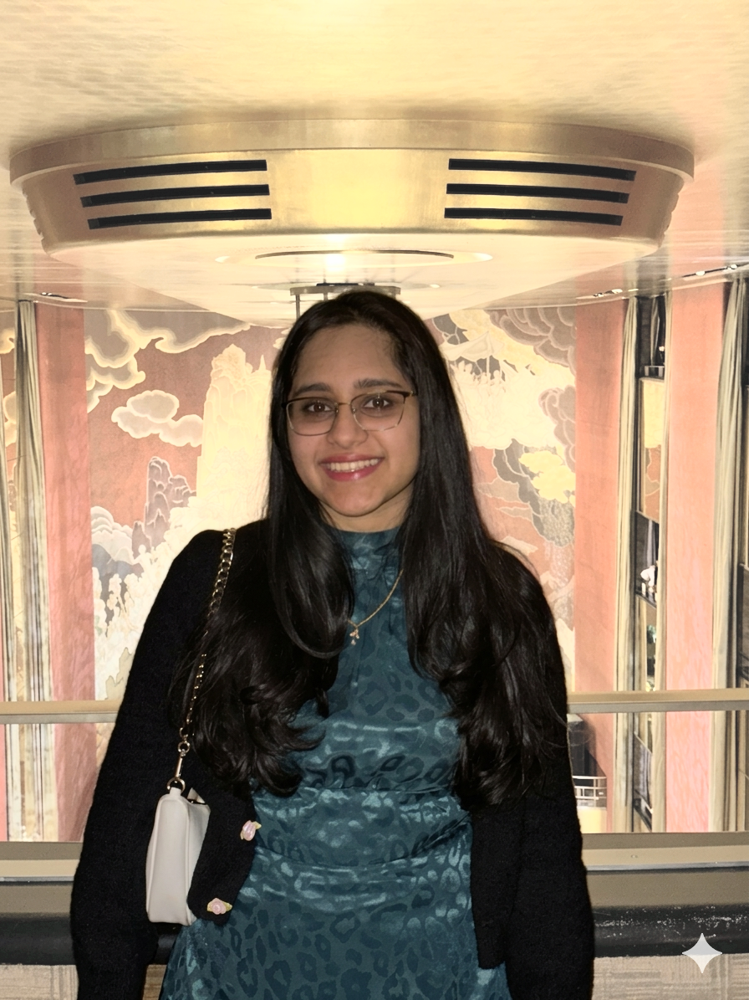

Pre-Doctoral Fellow in Economics · Columbia University

I am a Pre-Doctoral Fellow at Columbia University, working with Professor Robert Metcalfe on environmental and public economics projects. Before this, I completed my undergraduate studies in Economics at the University of Cambridge.
My research interests lie in evaluating government policies and social welfare, with a growing focus on industrial organization (IO) and electricity markets. You can view my full background in my CV.